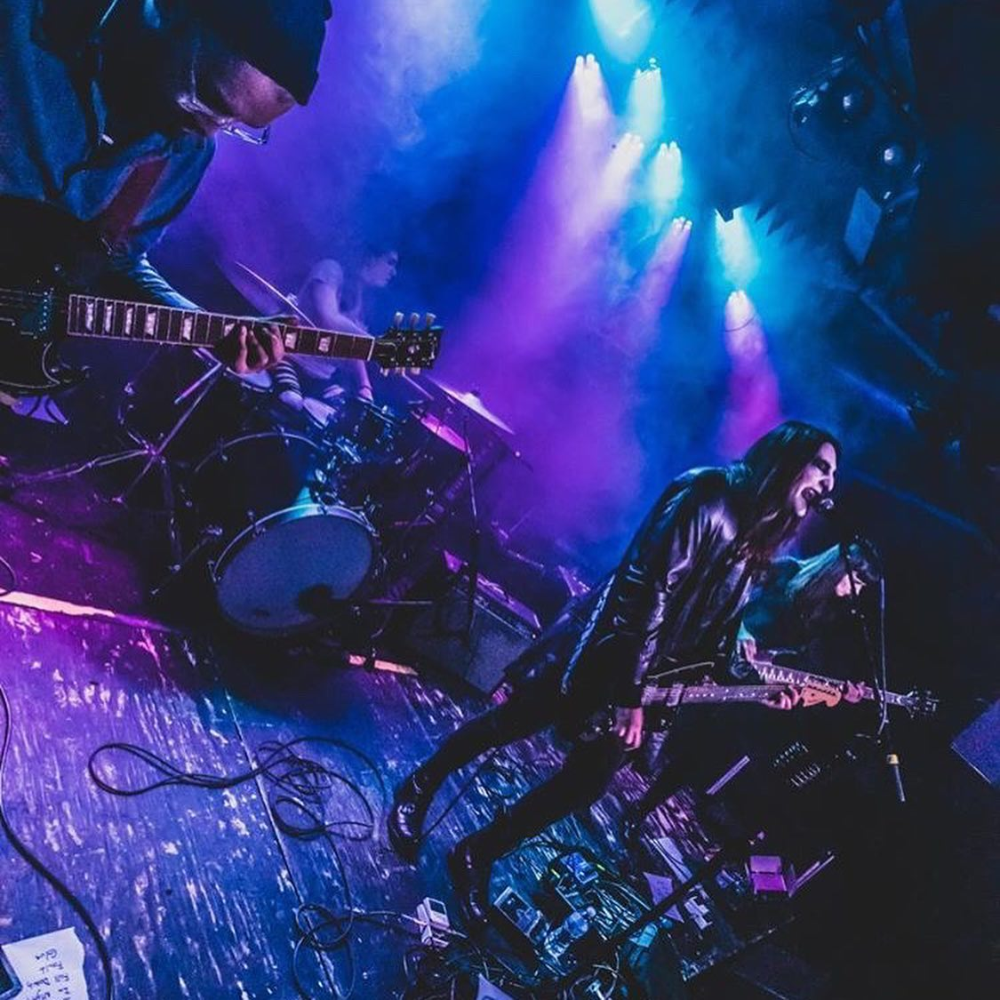

About VAZUM

VAZUM is a dark rock band from Detroit, MI. Since forming in 2017 they have independently released 3 albums. VAZUM is led by Zach Pliska whose background is as a drummer. Pliska is joined by Zachary Anderson on guitar and Emily Sturm on bass. They are currently working on a new album titled Vampire Villa which is due out this year.
"The band lavishly gifts us with larger-than-life melodies and godlike riffs, embracing the future through the past! "
"Some perfect imperfect rough ‘n’ ready noise for a generation of angry, hard-hitting noise-alt-rock packed with raging guitars and post-punk vocals that will appeal to fans of Basement, Interpol and/or A Place To Bury Strangers. This is energy, and anger in its purest, most valid form."